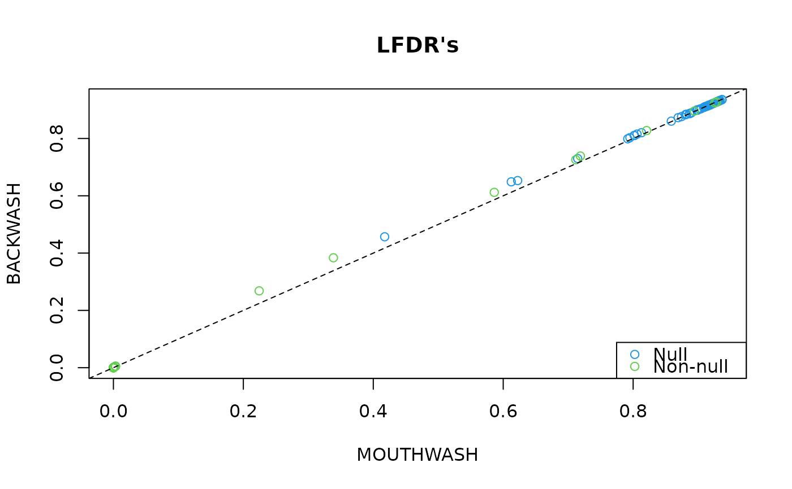
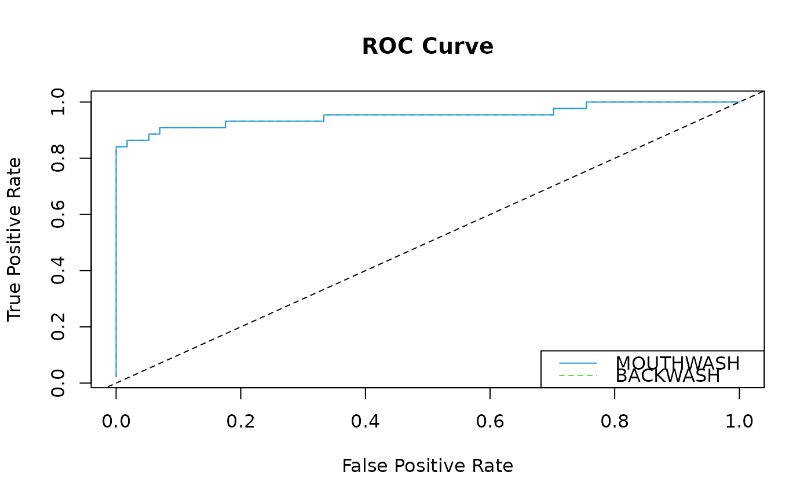
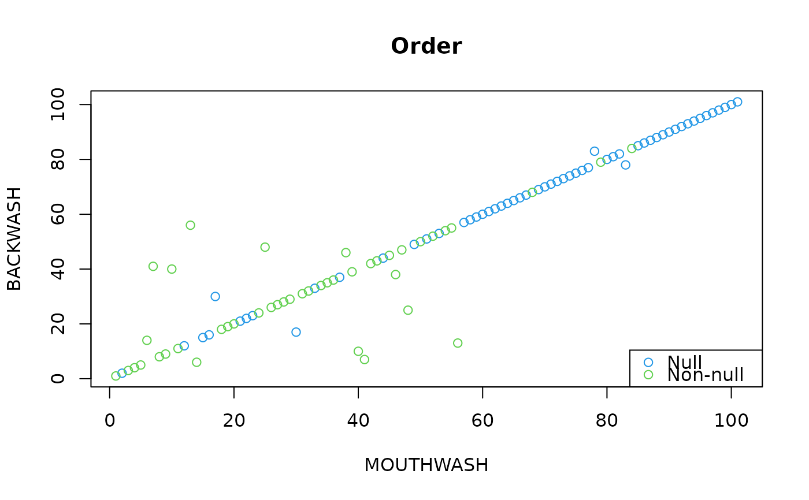

R/backwash.R
backwash.RdThis function implements the full BACKWASH method. This method is
very similar to the mouthwash method with one very
key difference: rather than estimate the confounders by maximum
likelihood, backwash goes more Bayesian and places a g-like prior
on the confounders. We fit the model by variational approximations.
backwash(Y, X, k = NULL, cov_of_interest = ncol(X), include_intercept = TRUE, limmashrink = TRUE, fa_func = pca_naive, fa_args = list(), lambda_type = c("zero_conc", "uniform"), pi_init_type = c("zero_conc", "uniform", "random"), grid_seq = NULL, lambda_seq = NULL, lambda0 = 10, scale_var = TRUE, sprop = 0, var_inflate_pen = 0, verbose = TRUE)
| Y | A matrix of numerics. These are the response variables where each column has its own variance. In a gene expression study, the rows are the individuals and the columns are the genes. |
|---|---|
| X | A matrix of numerics. The observed covariates. |
| k | A non-negative integer.The number of unobserved confounders. If not specified and the R package sva is installed, then this function will estimate the number of hidden confounders using the methods of Buja and Eyuboglu (1992). |
| cov_of_interest | A positive integer. The column number of the covariate in X whose coefficients you are interested in. The rest are considered nuisance parameters and are regressed out by OLS. |
| include_intercept | A logical. If |
| limmashrink | A logical. Should we apply hierarchical
shrinkage to the variances ( |
| fa_func | A factor analysis function. The function must have
as inputs a numeric matrix |
| fa_args | A list. Additional arguments you want to pass to fa_func. |
| lambda_type | A character. Should we apply a penalty on zero
( |
| pi_init_type | How should we initialize the mixing
proportions? By concentrating on zero ( |
| grid_seq | The grid for the mixing distribution. If
|
| lambda_seq | A numeric vector with elements all greater than
or equal to 1. These are the tuning parameters for the mixing
proportions. This can only be specified if |
| lambda0 | A numeric greater than or equal to 1. The penalty on
zero if |
| scale_var | A logical. Should we estimate a variance inflation
parameter ( |
| sprop | If \(b\) is an effect and \(s\) is an estimated
standard error, then we model \(b/s^{sprop}\) as
exchangeable. The default is 0. When |
| var_inflate_pen | The penalty to apply on the variance inflation parameter.
Defaults to 0, but should be something non-zero when |
| verbose | If |
backwash returns a list with some or all of the
following elements:
result: A data frame with the following columns:
betahat: The ordinary least squares (OLS) coefficients for the variable of interest.
sebetahat: The standard errors of the OLS regression coefficients (with or without limma-shrinkage depending on the argument of limmashrink).
NegativeProb: The posterior probability of an effect being less than zero.
PositiveProb: The posterior probability of an effect being greater than zero.
lfsr: The local false sign rate for the effects. See Stephens (2016).
svalue: The estimated average error rate in sign detection.
lfdr: The local false discovery rates.
qvalue: The estimated average error rate in signal detection.
PosteriorMean: The posterior means of the effects.
PosteriorSD: The posterior standard deviations of the effects.
elbo: The value of the evidence lower bound at the final
parameter values.
xi: The estimated variance scaling parameter.
phi: The estimated "g" parameter in the g-prior on the confounders.
z2hat: A function of the confounders. Mostly used for
debugging.
pi0: The estimated proportion of null effects.
Zhat: The estimate of the confounders.
alphahat: The estimate of the coefficients of the
confounders.
sig_diag: The estimate of the variances.
fitted_g: A list with the following elements:
pivec: The estimated prior mixing proportions.
tau2_seq: The prior mixing variances.
means: A matrix of the variational mixing means. The columns index the observations and the rows index the mixing distributions.
variances: A matrix of the variational mixing variances. The columns index the observations and the rows index the mixing distributions.
proportions: A matrix of the variational mixing proportions. The columns index the observations and the rows index the mixing distributions.
The assumed model is $$Y = X\beta + Z\alpha + E.$$ \(Y\) is a
\(n\) by p matrix of response variables. For example, each
row might be an array of log-transformed gene-expression data.
\(X\) is a \(n\) by \(q\) matrix of observed covariates. It
is assumed that all but one column of which contains nuisance
parameters. For example, the first column might be a vector of ones
to include an intercept. \(\beta\) is a \(q\) by \(p\) matrix
of corresponding coefficients. \(Z\) is a \(n\) by \(k\)
matrix of confounder variables. \(\alpha\) is the corresponding
\(k\) by \(p\) matrix of coefficients for the unobserved
confounders. \(E\) is a \(n\) by \(p\) matrix of error
terms. \(E\) is assumed to be matrix normal with identity row
covariance and diagonal column covariance \(\Sigma\). That is,
the columns are heteroscedastic while the rows are homoscedastic
independent.
This function will first rotate \(Y\) and \(X\) using the QR
decomposition. This separates the model into three parts. The first
part contains nuisance parameters, the second part contains the
coefficients of interest, and the third part contains the
confounders. backwash applies a user-provided factor
analysis to the third part to estimate the confounding factors,
then places a g-like prior on the confounders corresponding to the
second equation. It then jointly estimates the coefficients of
interest and the posterior of the confounders using a VEM
(Variational Expectation Maximization) algorithm, placing a
g-prior on the hidden confounders.
There are a couple forms of factor analysis available in this package. The default is PCA with the column-wise residual mean-squares as the estimates of the column-wise variances.
For instructions and examples on how to specify your own factor analysis, run the following code in R:
utils::vignette("customFA", package = "vicar"). If it doesn't work, then you probably haven't built
the vignettes. To do so, see https://github.com/dcgerard/vicar#vignettes.
Matthew Stephens. False discovery rates: a new deal. Biostatistics, 2016. doi: 10.1093/biostatistics/kxw041
mouthwash For a similar method that maximizes over the hidden confounders
rather than puts a prior on them.
library(vicar) ## Generate data ---------------------------------------------------------- set.seed(116) n <- 13 p <- 101 k <- 2 q <- 3 is_null <- rep(FALSE, length = p) is_null[1:57] <- TRUE X <- matrix(stats::rnorm(n * q), nrow = n) B <- matrix(stats::rnorm(q * p), nrow = q) B[2, is_null] <- 0 Z <- X %*% matrix(stats::rnorm(q * k), nrow = q) + matrix(rnorm(n * k), nrow = n) A <- matrix(stats::rnorm(k * p), nrow = k) E <- matrix(stats::rnorm(n * p, sd = 1 / 2), nrow = n) Y <- X %*% B + Z %*% A + E ## Fit BACKWASH ----------------------------------------------------------- bout <- backwash(Y = Y, X = X, k = k, include_intercept = FALSE, cov_of_interest = 2)#> - Computing independent basis using QR decomposition. #> - Computation took 0.008 seconds. #> - Running additional preprocessing steps. #> - Computation took 0 seconds. #> - Running second step of backwash: #> + Initializing parameters for EM algorithm.#>#> + Computation took 0.037 seconds. #> + Running one round of parameter updates. #> + Computation took 0.01 seconds. #> + Estimating model parameters using EM. #> + Computation took 2.008 seconds. #> + Generating posterior statistics. #> + Computation took 0.001 seconds. #> - Second step took 3.004 seconds. #> - Generating final backwash outputs. #> - Computation took 0 seconds.bout$pi0 ## Estimate#> [1] 0.5962888#> [1] 0.5643564## Fit MOUTHWASH ---------------------------------------------------------- mout <- mouthwash(Y = Y, X = X, k = k, include_intercept = FALSE, cov_of_interest = 2)#> Running mouthwash on 13 x 3 matrix X and 13 x 101 matrix Y. #> - Computing independent basis using QR decomposition. #> - Computation took 0.07 seconds. #> - Running additional preprocessing steps. #> - Computation took 0.01 seconds. #> - Running second step of mouthwash: #> + Estimating model parameters using EM. #> + Computation took 1.721 seconds. #> + Generating adaptive shrinkage (ash) output.#>#> + Computation took 0.02 seconds. #> - Second step took 2.218 seconds. #> - Estimating additional hidden confounders. #> - Computation took 0 seconds.mout$pi0 ## Estimate#> [1] 0.593422#> [1] 0.5643564## Very Similar LFDR's ---------------------------------------------------- graphics::plot(mout$result$lfdr, bout$result$lfdr, col = is_null + 3, xlab = "MOUTHWASH", ylab = "BACKWASH", main = "LFDR's")## Exact Same ROC Curves -------------------------------------------------- morder_lfdr <- order(mout$result$lfdr) mfpr <- cumsum(is_null[morder_lfdr]) / sum(is_null) mtpr <- cumsum(!is_null[morder_lfdr]) / sum(!is_null) border_lfdr <- order(bout$result$lfdr) bfpr <- cumsum(is_null[border_lfdr]) / sum(is_null) btpr <- cumsum(!is_null[border_lfdr]) / sum(!is_null) graphics::plot(bfpr, btpr, type = "l", xlab = "False Positive Rate", ylab = "True Positive Rate", main = "ROC Curve", col = 3, lty = 2)## But slightly different ordering ---------------------------------------- graphics::plot(morder_lfdr, border_lfdr, col = is_null + 3, xlab = "MOUTHWASH", ylab = "BACKWASH", main = "Order")